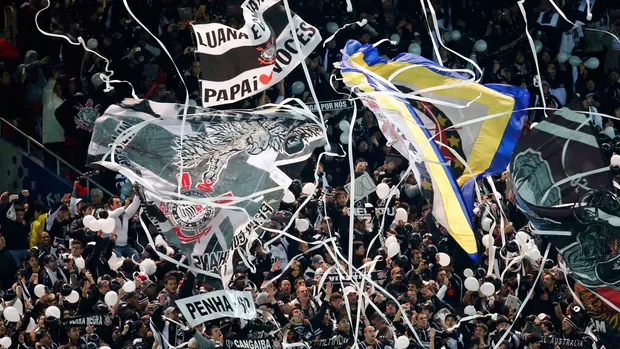

Em dezembro de 2012, o Sport Club Corinthians Paulista escreveu um dos capítulos mais gloriosos de sua história no Mundial de Clubes da FIFA. O cenário era o Japão, mais precisamente Tóquio e Yokohama, palco de uma verdadeira invasão corinthiana. Estima-se que mais de 30 mil torcedores viajaram do Brasil até o outro lado do mundo, movidos pela paixão e pelo sonho de ver o Timão conquistar o mundo.
Na semifinal, o Corinthians enfrentou o Al Ahly do Egito, uma equipe tradicional e respeitada no futebol africano. Foi um jogo equilibrado, mas decidido com a estrela do artilheiro Paolo Guerrero. Após cobrança de escanteio, o atacante peruano subiu mais alto que a defesa e cabeceou firme, garantindo a vitória por 1 a 0 e a classificação para a tão esperada final.
VIDEO
Rumo a Grande Final
A grande decisão foi contra o poderoso Chelsea, campeão da Liga dos Campeões da Europa. O mundo do futebol assistia com expectativa ao duelo entre o gigante inglês e a força do futebol brasileiro. Em campo, o Corinthians mostrou raça, disciplina tática e um espírito de luta impressionante. O goleiro Cássio fez defesas milagrosas, sendo peça fundamental naquela tarde histórica.
No segundo tempo, novamente ele: Paolo Guerrero. Em uma jogada pela direita, após cruzamento preciso, Guerrero aproveitou o rebote da defesa e, com categoria, cabeceou para o fundo do gol, levando a torcida à loucura e garantindo o 1 a 0 no placar. O Corinthians segurou a pressão até o apito final, e o mundo era preto e branco.
VIDEO
A conquista de 2012 não foi apenas um título. Foi a consagração de uma torcida apaixonada que cruzou oceanos para apoiar seu time, a prova da grandeza de um clube que, com raça e coração, venceu o mundo. Até hoje, aquele 16 de dezembro é lembrado com orgulho e emoção por milhões de corinthianos ao redor do planeta
